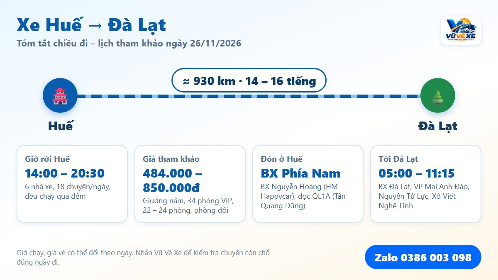

Trả lời nhanh: từ Huế lên Đà Lạt khoảng 930 km, xe đi thẳng chạy đêm mất 14 – 16 tiếng. Lịch ngày 26/11/2026 có 18 chuyến của 6 nhà xe: Quốc Bảo, Tân Quang Dũng, Điền Linh, Phương Trang, Quang Dũng VIP và HM Happycar, rời Huế từ 14:00 tới 20:30, tới Đà Lạt 05:00 – 11:15 sáng hôm sau. Giá phổ biến 484.000 – 850.000đ. Chiều ngược xem bài xe Đà Lạt về Huế.

Mục lục
- Bảng tóm tắt xe Huế đi Đà Lạt
- Thông tin từng nhà xe
- Huế đi Đà Lạt bao nhiêu km, mấy tiếng?
- Chọn chuyến theo giờ muốn tới Đà Lạt
- Lên tới Đà Lạt xuống ở đâu?
- Phòng đôi, 22 phòng hay giường nằm?
- Lưu ý riêng cho chặng đèo lên Đà Lạt
- Câu hỏi thường gặp
Bảng tóm tắt: xe Huế đi Đà Lạt (lịch ngày 26/11/2026)
| Nhà xe | Loại xe | Giờ đón | Điểm đón ở Huế | Giờ tới | Điểm trả ở Đà Lạt | Giá tham khảo | WC |
|---|---|---|---|---|---|---|---|
| Quốc Bảo | Giường nằm 34 phòng VIP | 14:00 · 17:01 | Bến xe Phía Nam Huế | 05:00 · 08:01 | Đà Lạt (hỏi điểm cụ thể) | Hỏi khi đặt | Hỏi khi đặt |
| Tân Quang Dũng | Limousine 22 phòng đôi | 15:30 · 15:31 · 16:31 | Bến xe Phía Nam Huế / Huế dọc Quốc lộ 1A | 07:00 – 07:36 | Văn phòng nhà xe ở Đà Lạt | 484.000 – 495.000đ (phòng đôi G) / từ 630.000đ | Có |
| Điền Linh Limousine | Giường nằm 40 giường | 15:30 | Huế (hỏi điểm cụ thể) | 06:00 · 06:15 | VP 192 Xô Viết Nghệ Tĩnh / VP đường Khe Sanh | 600.000đ | Hỏi khi đặt |
| Phương Trang | Limousine giường nằm 34 chỗ | 16:00 | Bến xe Phía Nam Huế | 06:00 | Bến xe Đà Lạt | 530.000đ | Hỏi khi đặt |
| Quang Dũng VIP Limousine | Limousine 22 phòng | 16:00 · 17:00 | Bến xe Phía Nam Huế | 08:00 · 09:00 | VP 263 Mai Anh Đào | từ 750.000đ | Có |
| HM Happycar | Limousine 24 phòng (Kim Long) | 17:00 · 19:30 · 20:30 | Bến xe Nguyễn Hoàng | 07:15 – 11:15 | VP 299 Nguyên Tử Lực / 2 Trần Nhân Tông (Maison Yên Chi) | từ 850.000đ | Hỏi khi đặt |
Lịch tham khảo cho ngày 26/11/2026, Vũ Vé Xe tra trên ứng dụng đặt vé ngày 19/11/2026. Giờ, giá có thể đổi theo ngày, cuối tuần và dịp Tết. Nhiều chuyến là chặng giữa của xe chạy từ Quảng Trị, Phong Nha hoặc Đà Nẵng, nên giờ ghé Huế có thể sớm hoặc muộn vài chục phút.
Thông tin từng nhà xe Huế – Đà Lạt
Các mục dưới đây xếp theo giờ rời Huế sớm tới muộn ngày tra, không phải thứ hạng chất lượng.
Quốc Bảo – giường nằm 34 phòng VIP
Nhà xe nhiều khách Huế hỏi nhất khi đi Đà Lạt. Lịch ngày 26/11 có hai chuyến đón ở Bến xe Phía Nam Huế lúc 14:00 (tới Đà Lạt khoảng 05:00) và 17:01 (tới khoảng 08:01), mất chừng 15 tiếng. Chuyến 14:00 là chuyến rời Huế sớm nhất trong ngày, hợp người muốn tới Đà Lạt từ rạng sáng.
Lịch chưa niêm yết giá và điểm trả cụ thể ở Đà Lạt, chỉ nhận đặt qua điện thoại. Khi giữ chỗ nên hỏi rõ giá theo ngày, điểm xuống gần chỗ ở và xe có nhà vệ sinh hay không.
Đặt vé Quốc Bảo: Zalo đặt vé · 0386 003 098 · 0963 307 942
Tân Quang Dũng – limousine 22 phòng đôi (WC)
Xe chạy từ Quảng Trị, ghé Huế buổi chiều. Ngày 26/11 có các giờ đón 15:30, 15:31 và 16:31 ở Bến xe Phía Nam Huế; chuyến 15:30 và 16:31 còn nhận khách dọc Quốc lộ 1A ở Huế. Xe tới văn phòng nhà xe ở Đà Lạt khoảng 07:00 – 07:36, mất chừng 15 – 15 tiếng 30.
Có hai mức giá: phòng đôi loại "G" 484.000 – 495.000đ (giá gốc 550.000đ, đặt qua điện thoại) và phòng đôi thường từ 630.000đ (giá gốc 700.000đ, có ưu đãi đặt sớm). Phòng đôi hợp vợ chồng hoặc hai mẹ con; đi một mình nên hỏi có ghép phòng hay phải mua cả phòng.
Đặt vé Tân Quang Dũng: Zalo đặt vé · 0386 003 098 · 0963 307 942
Điền Linh Limousine – giường nằm 40 giường
Một chuyến 15:30 rời Huế, tới Đà Lạt khoảng 06:00 – 06:15, mất chừng 14 tiếng 30. Xe trả khách ở văn phòng 192 Xô Viết Nghệ Tĩnh hoặc văn phòng trên đường Khe Sanh (Đà Lạt). Giá 600.000đ.
Lịch chỉ ghi điểm đón chung là "Huế", nên khi giữ chỗ cần hỏi chính xác chỗ lên xe (bến xe hay văn phòng) và giờ có mặt.
Đặt vé Điền Linh: Zalo đặt vé · 0386 003 098 · 0963 307 942
Phương Trang – limousine giường nằm 34 chỗ
Chuyến 16:00 ở Bến xe Phía Nam Huế, chạy thẳng tới Bến xe Đà Lạt khoảng 06:00, nhanh nhất trong ngày (14 tiếng). Giá 530.000đ. Đây là chuyến chạy thẳng Huế – Đà Lạt, không phải chặng ghé của tuyến khác, nên giờ đón ít bị lệch.
Đặt vé Phương Trang: Zalo đặt vé · 0386 003 098 · 0963 307 942
Quang Dũng VIP Limousine – limousine 22 phòng (WC)
Hai chuyến 16:00 và 17:00 ở Bến xe Phía Nam Huế, tới văn phòng 263 Mai Anh Đào khoảng 08:00 và 09:00. Đây là chặng của xe Đà Nẵng – Đà Lạt. Giá từ 750.000đ. Mỗi khách một phòng riêng có rèm, xe có nhà vệ sinh.

Đặt vé Quang Dũng VIP: Zalo đặt vé · 0386 003 098 · 0963 307 942
HM Happycar – limousine 24 phòng (Kim Long)
Ba chuyến 17:00, 19:30 và 20:30 ở Bến xe Nguyễn Hoàng (Huế), là chặng của xe Phong Nha – Đà Lạt. Mỗi chuyến có hai điểm trả: văn phòng 299 Nguyên Tử Lực (07:15, 09:45, 10:45) và 2 Trần Nhân Tông – Maison Yên Chi (07:45, 10:15, 11:15). Giá từ 850.000đ, cao nhất tuyến nhưng có nhiều giờ chạy và chuyến muộn nhất.
Đặt vé HM Happycar: Zalo đặt vé · 0386 003 098 · 0963 307 942
Nhà xe khác khách hay hỏi
Trên mạng còn hay nhắc Minh Đức, An Phú Travel, Quốc Khánh cho tuyến Huế – Đà Lạt. Ngày tra (26/11/2026), Vũ Vé Xe chưa thấy các nhà xe này trong lịch đặt vé chiều Huế đi Đà Lạt. Trung Đức Phát chỉ có chuyến chiều Đà Lạt về Huế (xem bài xe Đà Lạt về Huế), ngày tra không có chuyến chiều đi. Muốn đi đúng nhà xe quen, nhắn Zalo để Vũ Vé Xe hỏi lại lịch của ngày bạn đi.
Huế đi Đà Lạt bao nhiêu km, mấy tiếng?
- Quãng đường: khoảng 930 km theo đường bộ.
- Thời gian xe khách: 14 – 16 tiếng chạy thẳng qua đêm (Phương Trang nhanh nhất khoảng 14 tiếng; Quang Dũng VIP khoảng 16 tiếng vì ghé thêm điểm).
- Có xe ban ngày không: chiều đi không có chuyến ban ngày, sớm nhất là Quốc Bảo 14:00. Chiều ngược Đà Lạt về Huế có Trung Đức Phát 07:00 và HM Happycar 10:00 – xem xe Đà Lạt về Huế.
- Lộ trình: xe chạy theo Quốc lộ 1A và cao tốc Bắc – Nam vào phía Nam rồi lên cao nguyên qua đường đèo; tuyến cụ thể và điểm dừng nghỉ tùy nhà xe.
Chọn chuyến theo giờ muốn tới Đà Lạt
Mọi chuyến chiều đi đều chạy qua đêm, nên cách chọn dễ nhất là nghĩ xem sáng hôm sau mình muốn làm gì ở Đà Lạt:
- Tới từ rạng sáng 05:00: Quốc Bảo 14:00. Hợp người có người nhà ra đón hoặc muốn đi tiếp sớm.
- Tới sớm 06:00 – 07:45, có trọn buổi sáng: Phương Trang 16:00 (06:00), Điền Linh 15:30 (06:00 – 06:15), Tân Quang Dũng 15:30 – 16:31 (07:00 – 07:36), HM Happycar 17:00 (07:15 – 07:45).
- Tới 08:00 – 09:00, vừa giờ nhận phòng sớm hoặc gửi đồ: Quang Dũng VIP 16:00 – 17:00, Quốc Bảo 17:01.
- Tới gần trưa: HM Happycar 19:30 – 20:30 (09:45 – 11:15). Hợp người muốn đi làm cả ngày ở Huế rồi mới lên xe.
Các nhà xe đều rời Huế buổi chiều tối, nên nhớ ăn tối nhẹ trước giờ đón và mang nước, đồ ăn khô – xem đi xe khách đường dài: ăn uống, dừng nghỉ. Lần đầu đi chặng dài cả đêm, đọc thêm mẹo ngủ ngon trên xe giường nằm.
Lên tới Đà Lạt xuống ở đâu?
- Bến xe Đà Lạt: Phương Trang. Có taxi và xe ôm công nghệ về trung tâm.
- Văn phòng 263 Mai Anh Đào: Quang Dũng VIP.
- Văn phòng 299 Nguyên Tử Lực và 2 Trần Nhân Tông (Maison Yên Chi): HM Happycar – hỏi khi đặt nên xuống điểm nào gần chỗ ở hơn.
- Văn phòng 192 Xô Viết Nghệ Tĩnh hoặc đường Khe Sanh: Điền Linh.
- Văn phòng nhà xe ở Đà Lạt: Tân Quang Dũng; Quốc Bảo – hỏi nhà xe địa chỉ và có xe trung chuyển không.
Cách đi tiếp từ bến, văn phòng về khách sạn có trong bài xe khách vào Đà Lạt xuống ở đâu. Lên Đà Lạt chơi vài ngày, xem gợi ý lịch trình ở du lịch Đà Lạt bằng xe khách.
Phòng đôi, 22 phòng hay giường nằm?
Giường nằm 34 – 40 chỗ (Phương Trang, Điền Linh) giá mềm, giường xếp ba dãy hai tầng. Giường nằm 34 phòng VIP (Quốc Bảo) có vách ngăn từng chỗ, nên hỏi kỹ kích thước khi đặt. Limousine 22 – 24 phòng (Quang Dũng VIP, HM Happycar) mỗi khách một khoang có rèm hoặc cửa, rộng hơn, hợp đi một mình. Phòng đôi của Tân Quang Dũng dành cho hai người, nếu đi lẻ nên hỏi kỹ cách bán vé.
Chặng 14 – 16 tiếng nên ưu tiên xe có nhà vệ sinh – xem mẹo hỏi xe có nhà vệ sinh không. So sánh phòng đơn và phòng đôi kỹ hơn ở mẹo chọn phòng đơn, phòng đôi trên xe giường phòng.
Lưu ý riêng cho chặng đèo lên Đà Lạt
- Lạnh lúc rạng sáng: xe lên cao nguyên khi trời gần sáng, điều hòa cộng với khí lạnh bên ngoài dễ làm người mỏng áo bị cảm. Để áo khoác, khăn, tất ngay chỗ nằm – xem mẹo mặc ấm khi đi xe điều hòa lạnh.
- Say xe ở đoạn đèo cuối: người hay say nên chọn giường tầng dưới, tránh đọc điện thoại lâu khi xe vào cua – xem mẹo đi xe khách không say xe.
- Mưa ở miền Trung: từ tháng 10 tới tháng 12, đoạn Huế – Quảng Nam hay mưa lớn, xe có thể tới trễ. Theo dõi tin thời tiết trước ngày đi – xem đi xe khách mùa mưa bão miền Trung.
- Đặt cả chiều về: cuối tuần và dịp lễ, chuyến Đà Lạt về Huế hết chỗ nhanh. Đặt luôn vé về khi đã biết ngày – giờ chạy chiều về có trong bài xe Đà Lạt về Huế, cách đặt hai chiều xem mẹo đặt vé chiều đi và chiều về.
Chiều ngược: xe Đà Lạt về Huế
Chiều Đà Lạt về Huế có lịch khác hẳn: có chuyến ban ngày (Trung Đức Phát 07:00, HM Happycar 10:00) và thêm nhà xe Trung Đức Phát. Bảng giờ, giá và điểm đón ở Đà Lạt có trong bài riêng xe Đà Lạt về Huế: giờ chạy, giá vé.
Tuyến cùng cụm
Xe Đà Lạt về Huế · xe Đà Nẵng đi Đà Lạt · xe Quảng Trị đi Đà Lạt · xe Huế đi Nha Trang · xe Huế đi Sài Gòn · xe Huế đi Đồng Nai · xe Huế đi Đà Nẵng.
Đặt vé Huế đi Đà Lạt qua Zalo
Gửi một tin gồm ngày đi, số khách, chỗ lên ở Huế và chỗ ở tại Đà Lạt. Vũ Vé Xe hỏi chỗ trên các chuyến phù hợp, báo lại giá và giờ đón; việc thanh toán, nhận vé làm theo hướng dẫn của nhà xe đã chọn. Bài ghi tên phường, xã ở Huế theo cách gọi quen thuộc trước khi sáp nhập; khi đặt vé, Vũ Vé Xe sẽ tư vấn kỹ điểm đón theo địa chỉ hiện tại của bạn.
💬 Nhắn Zalo đặt vé 📞 0386 003 098 📞 0963 307 942
Trang tuyến: Huế – Đà Lạt.
Câu hỏi thường gặp
Xe Huế đi Đà Lạt bao nhiêu km, mất bao lâu?
Quãng đường khoảng 930 km. Theo lịch ngày 26/11/2026, xe chạy thẳng mất khoảng 14 – 16 tiếng: Phương Trang 14 tiếng, HM Happycar 14 tiếng 15 – 14 tiếng 45, Điền Linh 14 tiếng 30, Quốc Bảo 15 tiếng, Tân Quang Dũng 15 – 15 tiếng 30, Quang Dũng VIP 16 tiếng.
Vé xe Huế đi Đà Lạt giá bao nhiêu?
Tham khảo ngày 26/11/2026: Tân Quang Dũng 484.000 – 495.000đ (phòng đôi loại G, đặt qua điện thoại) hoặc từ 630.000đ, Phương Trang 530.000đ, Điền Linh 600.000đ, Quang Dũng VIP từ 750.000đ, HM Happycar từ 850.000đ. Quốc Bảo chưa niêm yết giá, cần hỏi trước. Giá có thể đổi theo ngày.
Xe Huế đi Đà Lạt đón ở đâu?
Phần lớn đón ở Bến xe Phía Nam Huế (Tân Quang Dũng, Phương Trang, Quang Dũng VIP, Quốc Bảo). HM Happycar đón ở Bến xe Nguyễn Hoàng. Tân Quang Dũng có thêm điểm đón dọc Quốc lộ 1A ở Huế. Điền Linh ghi điểm đón chung là Huế, nên hỏi điểm cụ thể khi giữ chỗ.
Xe Huế lên Đà Lạt trả khách ở đâu?
Theo lịch: Bến xe Đà Lạt (Phương Trang), văn phòng Đà Lạt của Tân Quang Dũng, văn phòng 263 Mai Anh Đào (Quang Dũng VIP), văn phòng 299 Nguyên Tử Lực và 2 Trần Nhân Tông – Maison Yên Chi (HM Happycar), văn phòng 192 Xô Viết Nghệ Tĩnh và văn phòng đường Khe Sanh (Điền Linh). Quốc Bảo trả khách ở Đà Lạt, nên hỏi điểm cụ thể.
Có xe Huế đi Đà Lạt chạy ban ngày không?
Ngày 26/11/2026 không có chuyến rời Huế buổi sáng. Chuyến sớm nhất là Quốc Bảo 14:00, muộn nhất HM Happycar 20:30; tất cả chạy qua đêm và tới Đà Lạt sáng hôm sau. Chiều ngược Đà Lạt về Huế thì có xe ban ngày (Trung Đức Phát 07:00).
Xe Quốc Bảo Huế đi Đà Lạt có chạy không?
Có. Lịch ngày 26/11/2026 ghi Quốc Bảo chạy giường nằm 34 phòng VIP, đón ở Bến xe Phía Nam Huế lúc 14:00 và 17:01, tới Đà Lạt khoảng 05:00 và 08:01; chiều về cũng 14:00 và 17:01. Nhà xe chưa niêm yết giá trên lịch, nhắn Zalo 0386 003 098 để Vũ Vé Xe hỏi giá và chỗ trống.
Vé xe Huế đi Đà Lạt dịp Tết có tăng không?
Thường tăng và nhanh hết chỗ, nhất là những ngày khách Huế lên Đà Lạt chơi Tết và ngày đi làm lại sau Tết. Nên báo ngày đi qua Zalo 0386 003 098 sớm để Vũ Vé Xe hỏi khi nhà xe mở bán.
Hỏi chuyến Huế đi Đà Lạt
Lên Đà Lạt nghỉ mát, đi học hay đi làm, cứ nhắn 0386 003 098 hoặc gọi 0963 307 942. Lịch và giá trong bài để anh/chị hình dung trước; giờ đón, điểm trả và giá cuối cùng do nhà xe chốt khi giữ chỗ.